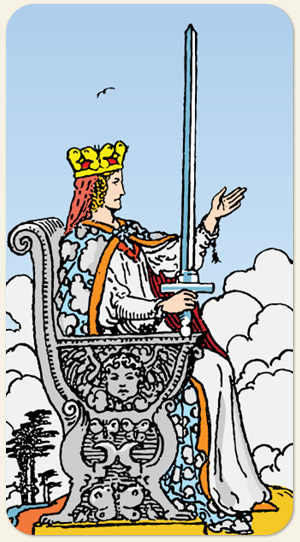

A percepção aguçada, a independência intelectual e a autossuficiência. A maturidade do elemento Ar, indicando uma mente que passou por provações e emergiu com discernimento e clareza. A objetividade, a comunicação honesta, a capacidade de estabelecer limites, a honestidade cortante e a sabedoria adquirida pela experiência.
É associada às mulheres inteligentes, põe o conhecimento a serviço do povo, filosofia, conhecimento voltado para assuntos do coração, comunicação amorosa. Possui um japamala na mão esquerda, pode ser o conhecimento holístico. É a figura que segura a espada de forma mais parecida com o Ás de Espadas.
Positivo: Amor ao conhecimento, a pessoa que garante o direito de todos, defende os outros, advogados, juízes, aconselhadores, professores, mentores, são referência, mulher inteligente e justa.
Negativo: Amor ao conhecimento para o mal, ódio ou repulsa ao conhecimento, parcialidade. De que serve a filosofia se eu tenho uma espada na minha mão? Um senso de justiça seco, cortem as cabeças, É uma inimiga, pessoas que usam sua influência para prejudicar o outro, injusta e cruel. O negativo da água: mágoa e rancor. Tirar vantagem, usar a lábia, pessoa que não ataca diretamente como o Rei, mas ataca indiretamente com intrigas e manipulações.
Símbolos: Trono, Coroa, Querubim, Espada em Riste, Olhar para o Horizonte, Borboletas, Céu Límpido, Pássaro.
Cores: Azul, Vermelho, Amarelo, Cinza, Branco.
Elementos: Ar e Água.